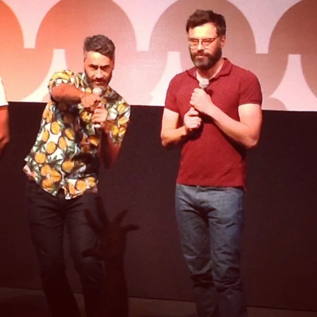

Сначала друг другу не понравились
Тайка Вайтити и Джемейн Клемент при знакомстве друг другу не понравились. Причём по внешнему виду — до разговора дело ещё не дошло.
Всё изменило прослушивание в университетское комедийное шоу: они рассмешили друг друга, стали работать вместе и выступали дуэтом The Humourbeasts. Позже вместе написали, поставили и сыграли «Реальных упырей».
Первая оценка по внешности оказалась так себе. Зато материала для совместной работы хватило на годы.